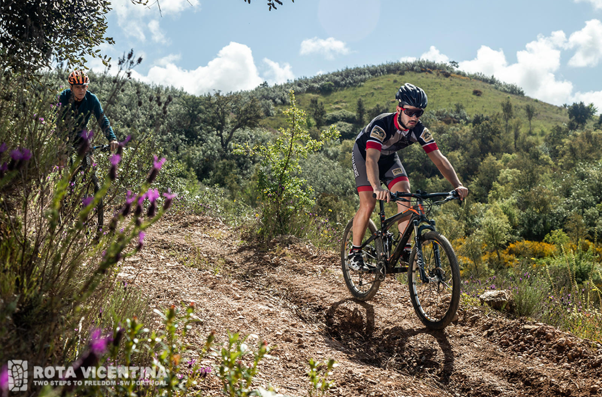
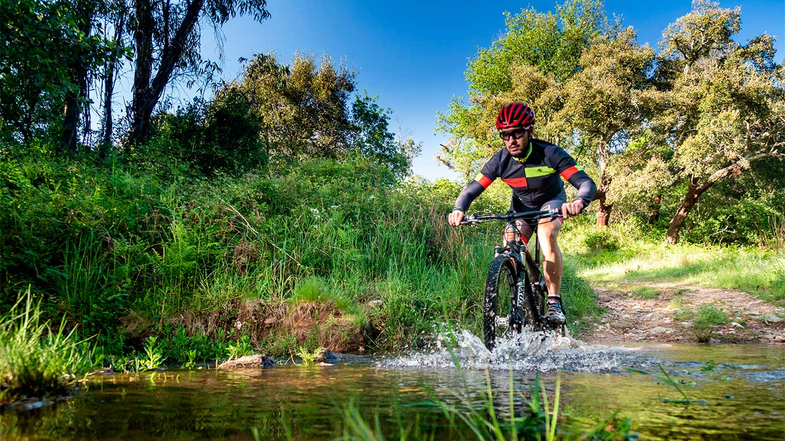
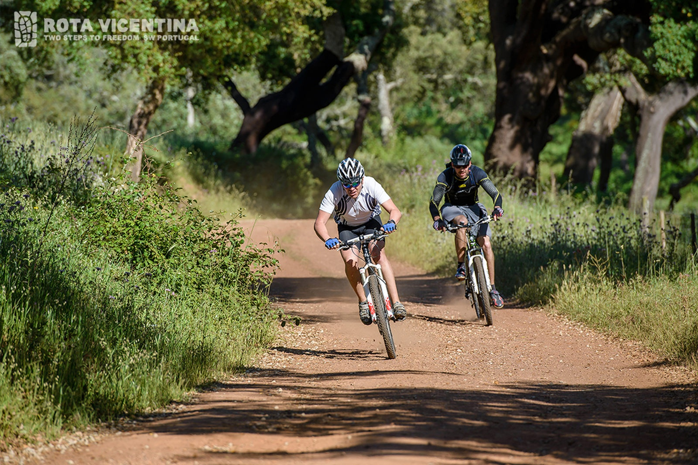
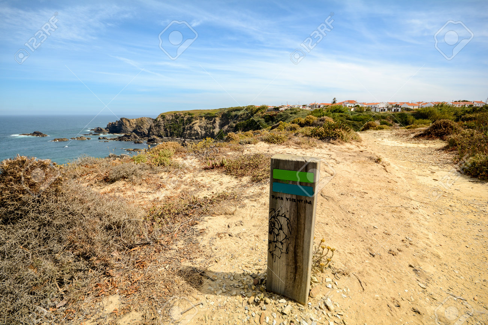

Evento Principal
O Grandfondo
Prova de resistência e contemplação com percursos técnicos e vistas inesquecíveis, organizada pela Câmara Municipal de Odemira.
- Local: Rota Vicentina — Costa Alentejana
- Data: 6 de Stembro de 2026
- Pontos de apoio: Abastecimentos, assistência e apoio médico

Inscrições
Inscreve-te no Grandfondo — vagas limitadas. Seleciona a prova e envia o formulário.
Grandfondo — 170 km
Percurso completo pela Rota Vicentina, com segmentos técnicos e subidas longas.
€45
Mediofondo — 110 km
Desafio intermédio, equilibrado entre força e técnica.
€35
Minifondo — 55 km
Prova curta com trechos costeiros, ideal para iniciados.
€20
Outras provas e atividades
Passeio Familiar — 20 km
Rota plana e segura, ideal para famílias e crianças.
Gran Fondo Curto — 40 km
Versão curta do desafio, para quem procura ritmo mais moderado.
Rota de BTT Assistida — 30 km
Trilhos interiores com guias locais e paragens culturais.
Galeria



Contactos
Divisão de Desporto e Juventude — Câmara Municipal de Odemira
- Email: desporto@cm-odemira.pt
- Tel: +351 286 XXX XXX